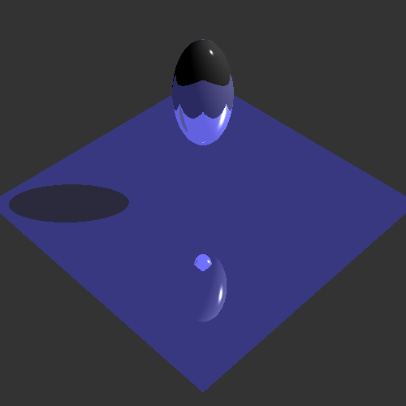
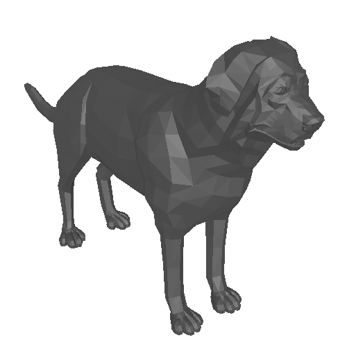
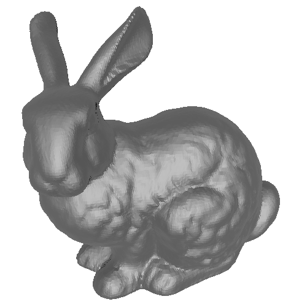
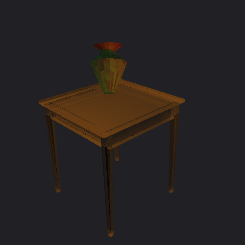
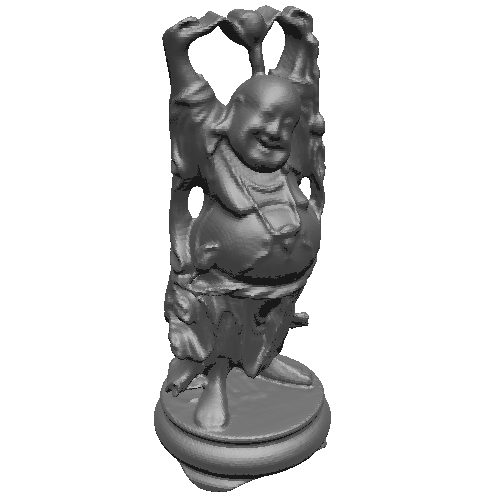

| Name | Shi Zhang | |
| JHED ID | szhang37 | |
| Class (357 / 457) | 457 | |
| Environment | G++, Eclipse, Fedora 17 (64-bit) | |
| Number of late days used | 0 day | |
| Features | Green features are fully implemented; yellow features are partially implemented; red features are unimplemented. Due to the slowness of jittered supersampling, it was implemented only as a proof-of-concept and turned off for the generation of all other image examples shown below.  test.ray, 1.40732 seconds |
|
| (1) | RayScene::GetRay | |
| (2) | RayGroup::intersect
First version: Local transformation and bounding volume information ignored |
|
| (2) | RaySphere::intersect First version: Texture coordinates ignored |
|
| (2) | RayTriangle::intersect First version: Texture coordinates ignored |
|
| (1) | RayScene::GetColor First version: Only ambient and emissive properties calculated |
|
| (2) | RayPointLight::getDiffuse, RaySpotLight::getDiffuse, RayDirectionalLight::getDiffuse | |
| (2) | RayPointLight::getSpecular, RaySpotLight::getSpecular, RayDirectionalLight::getSpecular | |
| (2) | RayPointLight::isInShadow, RaySpotLight::isInShadow, RayDirectionalLight::isInShadow | |
| (1) | RayScene::GetColor Second version: Diffuse and specular contributions from light sources added |
|
| (2) | RayGroup::intersect Second version: Local transformations taken into account |
|
| (1) | RayScene::GetColor
Second version: Reflected color contributions added  dog.ray, 3.89 seconds  bunny.ray, 5.73 seconds |
|
| (1) | RayScene::GetColor
Third version: Refracted color contributions added, but refraction indices ignored |
|
| (2) | RayPointLight::transparency, RaySpotLight::transparency, RayDirectionalLight::transparency | |
| (2) | RayScene::GetColor Fourth version: Refraction indices taken into account |
|
| (3) | RayShape::setBoundingBox, RayGroup::setBoundingBox, BoundingBox3D::intersect, RayGroup::intersect | |
| (2) | RayGroup::intersect
Fourth version: Bounding boxes ordered and tested before shapes intersected |
|
| (2) | RayTriangle::intersect Second version: Texture coordinates taken into account |
|
| (1) | RaySphere::intersect Second version: Texture coordinates taken into account |
|
| (1) | Jittered supersampling | |
| (1) | Soft shadows | |
| (1) | RayBox::intersect | |
| (1) | RayCylinder::intersect | |
| (1) | RayCone::intersect | |
| (2) | Perlin noise | |
| (1) | Bump mapping | |
| (1) | SIGGRAPH paper procedure | |
| (2) | Octree or BSP | |
| Other points | (1) | Submitting one or more images for the art contests  |
| (1) | Submitting one or more .ray files for the art contests See vase.ray, which was used to create the final vase frame of vase.bmp. |
|
| (?) | Trace hundreds of thousands of triangles in few minutes with recursion depth 5 The provided buddha.ray file contains 318416 triangles and was traced in 3.64 seconds with recursion depth 5:  |
|
{kind=link}